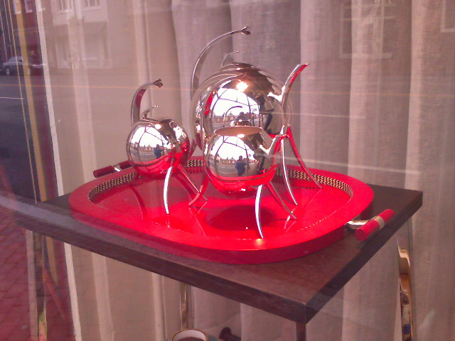
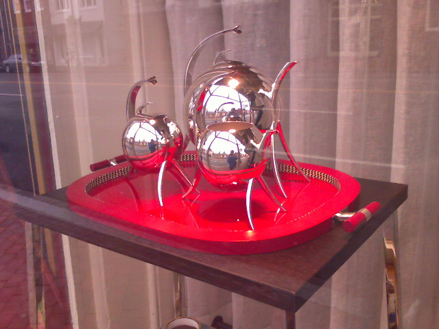
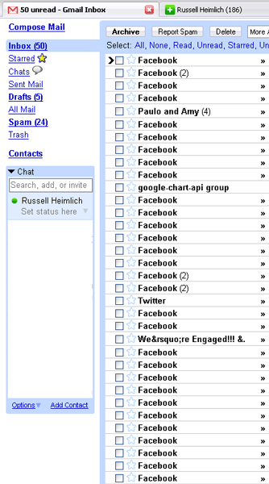
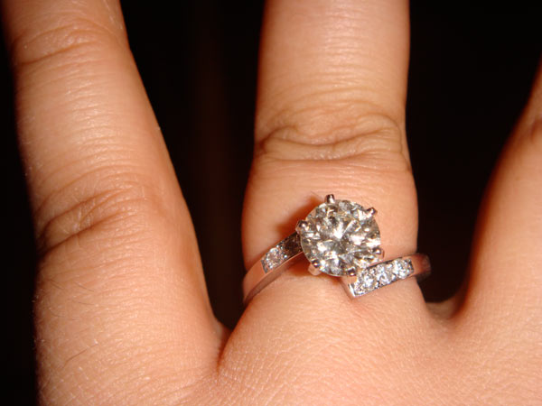
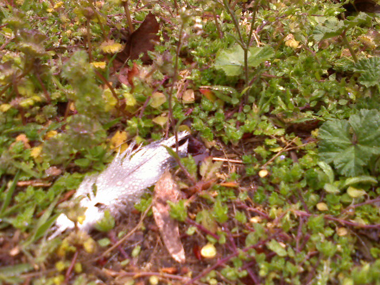
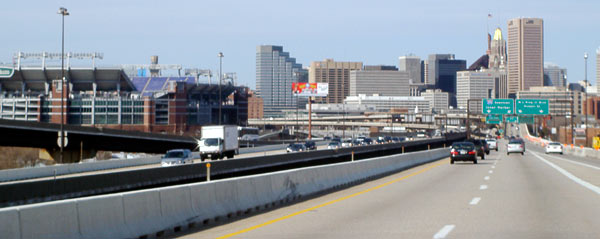
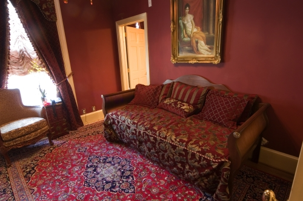

A Modern Tea Set In Georgetown

Saw this interesting tea set in the window of the Keith Lipert Gallery on M street in Georgetown.


Saw this interesting tea set in the window of the Keith Lipert Gallery on M street in Georgetown.
Opened up my Gmail this morning and was presented with this…

Thank you all for the congrats and best wishes. Kristina and I really appreciate it!

So after 7 years of being together, I finally popped the question to my girlfriend Kristina. I got a call from the jewelers this morning that the ring was ready. I left work early to trek from Georgetown, D.C., to Columbia, Maryland. On the way I got in touch with Kristina’s roommate to coordinate the video/photo taking so we would have this moment recorded.
After I picked up the ring I stopped by her parents house to get their approval. They were shocked but happy for our forthcoming engagement. I also swung by my parents house to give them a preview. Finally I made it down to Kristina’s apartment in College Park where apparently she was asleep. I snuck into Kristina’s roommates room while we coordinated our plan. Then Kristina called me on my cell phone! I rushed to her roommates bathroom and pretended that I was home at my apartment. She totally took the bait.

While she was on her computer checking e-mail, the time was right to strike. I knocked on her door and then got down on one knee. See for yourself:
As you can see she had no idea what was coming and she said YES! We’ll be starting our own blog at RussellAndKristina.com or KristinaAndRussell.com. I own both of them but we still need to formulate our design. We spent the rest of the night calling friends and family and sharing our joyous news.
P.S. Save the date, March 20th, 2010!

It’s a cool drizzly morning. I once again have time to stop and moblog on my way to work.
On March 21st, 2008, Kristina and I have been together for 7 years. Most of our anniversaries were spent apart while I was in college up in Philadelphia and Kristina was studying in Maryland. This year we wanted to mark the occasion in a special way by going to a bed and breakfast in Baltimore.

After weeding through the several different options available we chose the 1840’s Carrollton Inn just outside of the inner harbor. We stayed in the Independence suite which has burgundy walls, French Bonaparte furnishings, and a whirlpool tub. Upon entering our suite I was in awe. Kristina was really happy with our selection too. In fact we were both so pleased with the room that we cancelled our dinner reservations at Aldo’s and ordered in from Velleggia’s.


For the past month I have been working feverishly on the latest release of America’s Best Graduate Schools put out by U.S.News and World Report. Today we finally launched it to the public and I wanted to show the difference between last year’s release and this years.
The old Best Graduate pages were constructed with several year old PHP code and hosted on a couple of Apache servers. Much of the layout was done with tables (spacer .gifs ugh…) which became very difficult to manage after many annual revisions.

This year we decided to re-do the whole thing with a new look and a new Zope backend. The HTML and CSS code was completely modular for maximum efficiency. It was actually a lot of fun seeing the whole thing come together.

So have a look around the new site and let me know what you think. You can see the official blog post about all of the new features and functionality here. If you want to know some of the technical details, leave a comment. There was a lot of mental energy that went into the design of the site. But now I’m beat from the pre-launch stress and look forward to getting to bed before midnight.
The Washington D.C. Metrorail system is the second busiest public transit system in the U.S. But when it comes to producing viral videos, Metro is probably the second worst (this video is probably #1) as evidence by this little gem:
You’ve got to give the people working at the Washington Metropolitan Area Transit Authority some credit for reaching out to the people through their own medium, YouTube. Although I think people are passing it around for a good laugh at how cheesy it is and not on how informative it might be.
When I heard that Flickr is nearly ready to add video capabilities, I felt a bit queasy. Flickr is the leader in the photo sharing arena by a large margin. The main reason it reached critical mass was because of the community it built around the photos uploaded by users. It is also one of the harder sites to monetize since display advertising clashes with photo viewing and there isn’t enough text content for contextual advertising to work. The $24.95 Pro memberships (which can be given as gifts *wink wink*) keep Flickr from being a total money-sink.

Photos require a large chunk of bandwidth to serve up to the millions of Flickr users, but that is nothing compared to the overhead of video. This is probably a moot point considering the company is running off the pipes of it’s owner, web pioneer Yahoo.
While there are good and bad reasons for Flickr to add video, I don’t think they can compete in such a crowded video-sharing marketplace. Did Vimeo, Viddler, Revver, Daily Motion, Blip.tv, Veoh, and the all mighty YouTube leave anything for Flickr to improve upon? It looks like Flickr will have a long, uphill battle to even catch up to the middle of the pack.
Flickr has a huge community around photos and what they need to do is offer more photo related services. Many artists on Flickr have an account at 3rd party sites for selling prints of their work. Flickr could offer fine-art prints from members that opt-in to sell their photos with the service. This way Flickr would tie the browsing and buying experience together and could make a small profit off of each transaction. An example of another art site doing something similar is DeviantART.com (see my prints.).
DeviantART lets users upload as many photos as they want with no file size limitations, just like Flickr. Every member is eligible to opt-in to the standard print account which allows them to sell their art work and receive a cut of the profits. A Premium print account is available for $24.95 a year and offers more print customizations and a higher share of the profits from a sale. These are not run-of-the-mill snapshot prints like at Walmart or Costco. DeviantART does high quality work. The beauty of this is DeviantART can set a base price which includes a tiny profit with every transaction as well as helping out it’s communities. When community members profit, the company profits as well.

Flickr needs something like this! How could such a megasite sit back and watch it’s users point potential customers off to make a purchase? This is money that they are letting go by under their noses. And what do they plan to do with video anyways? Nobody has figured out a successful way to monetize video.
Flickr already has an intuitive interface for uploading, tagging, and browsing photos, why can’t they add selling photos to that list? I feel offering a way for the community to profit off their work while helping Flickr earn it’s keep makes everyone happy. This is way better than adding the latest me-too feature that is already pervasive throughout the web.
Thanks to the Flickr Interestingness widget on my Netvibes page, I stumbled across two Flickr members with gorgeous work.
First up is Sakura who does a lot of floral macro work. What really makes her photos stand out is the bright, vibrant colors that are usually blurred into the background. She sells prints of her photos at Imagekind.


Next I stumbled upon JayJuice who drew me in with her pictures of minimalistic urban landscapes. I love how she can find beauty in an everyday scene. Prints from JayJuice are available at Red Bubble.


If you are looking for photographic inspiration, take a look at the rest of the galleries these two offer on Flickr.